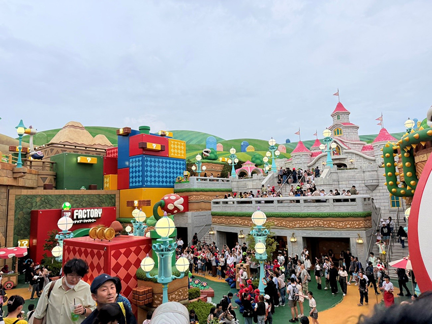

大阪之旅
邱宜甄│平鎮廠務處＼人事部
第一日：住宿與交通篇
這次的行程原本是安排在雙十節，感謝公司讓我享受這個連假，免去了請假的麻煩。上次來大阪是跟閨蜜們的單身之旅，這次帶著家人一起來，因為有小朋友，所以行程安排上以方便為主。我訂了關西機場當地的接送機服務，司機從出關帶著我們上車40分鐘就到達了Airbnb的民宿。
| 我們包的這個民宿距離道頓堀約15分鐘車程，既安靜又便利。 |
雖然日本的房子普遍不大，但這裡整理得非常乾淨，有四個房間、兩個衛浴和三個洗手間，還有大客廳和廚房，小電梯也很方便搬運行李。可以看出民宿老闆對經營的用心，各種生活用品及廚房浴室甚至有洗衣機附膠囊可用，無論是廁所還是房間，都是乾乾淨淨，赤腳走都沒問題！旁邊還有一間大型超市，兩層樓的選擇讓我們採買生活用品非常方便。
第一天到達日本後已經夜深，等小朋友睡著後，大人們趁機坐計程車直奔24小時藥妝店唐吉訶德。這裡的價格加上退稅折扣，幾乎都是台灣的6.7折，我們好好逛了一番，直到回到民宿已經快三點，真是既滿足又已精疲力竭！
第二日：道頓堀 蟹道樂 通天閣
| 今天我們來到道頓堀，這裡各種巨大立體招牌矗立，代表著大阪南區的繁華，遊客絡繹不絕。 當然，這裡也是購物的天堂！ 拍照時一定要和固力果跑跑人拍張合照，但白天的遊客很多，小心路人亂入鏡哦！ |
 |
| 午餐我們選了當地有名的蟹道樂，招牌的巨大螃蟹非常搶眼。這裡的螃蟹套餐讓我們能品嚐到北海道的新鮮螃蟹， 從生的到水煮、烤的、壽喜鍋，各種烹調方式讓人驚喜，每道菜都非常新鮮美味。 |
| 傍晚時分，我們安排去通天閣逛逛。通天閣是一座展望塔，位於新世界的核心區域，周邊的小商圈就像個迷你夜市，非常熱鬧。 |
| 晚餐我們選擇了元祖炸串達摩，這家自1929年開業，以特製油炸串聞名，油耗味低，讓人吃得輕鬆無負擔。剛炸好的串串，再沾上反覆研發的特製醬汁，真是讓人陶醉！如果不知道點什麼，推薦他們的「總本店組合套餐」，裡面有牛肉、蓮藕、香腸等九串炸串，還有味增熬煮的牛筋和蒟蒻，絕對是美味享受！回到民宿，大家已經累癱了。 |
第三日：大阪環球影城
| 大家最期待的行程環球影城！我真的推薦購買VIP導覽服務，面對那長長的排隊人潮，導覽員幫我們優雅地開道， 讓我們能迅速體驗四個設施：小小兵、大白鯊、馬力歐賽車和耀西冒險。 |
| VIP導覽省下了很多排隊時間，還額外送了三張不限時間的快通券，讓我們能玩到七個設施，真是超划算！ 不過因為時間有限，我們還是沒能全部玩完。 |
|  |
| 馬力歐區是我們最期待的地方，整個場景如同電玩中的世界，讓人驚嘆！ |
| 只要有馬力歐手錶，就能和設施互動，彷彿自己身在遊戲中。我們被這裡的氛圍吸引， 瘋狂購買了兩個造型的爆米花桶、馬力歐手錶和許多限定版的小娃娃。 |
| 晚上剛好碰上年度萬聖節活動，六點時整個園區瞬間變得詭異，殭屍、地獄新娘和電鋸殺人魔四處遊蕩，讓人心跳加速。 |
| 雖然他們不會超過人行道，所有會害怕的小朋友嚇得躲進餐廳避難。每隔半小時，鬼們會變身跳起熱鬧的舞蹈， 彷彿在舉行大型派對。音樂結束後，他們又會回到嚇人的模式，真的非常有趣！ |
晚上的萬聖節活動讓原本還開心的兒子嚇哭說想回家，最終我們待到九點半才離開，回到民宿已經疲憊不堪。
第四日：大阪城天守閣 梅田區 敘敘苑
| 今天我們悠閒地前往大阪城天守閣，上次沒來到這裡，這次終於踩點！ |
| 這裡壯觀又好拍，與之前幾天大阪市區浮誇鮮豔的廣告牌風格截然不同，讓人感受到日本傳統文化的安靜美。 |
| 下午我們到梅田區的百貨公司逛逛，這裡的每間百貨公司都超級巨大！ |
| 買了著名日本必吃的HARBS蛋糕，除了他們的招牌水果蛋糕，這次發現栗子蛋糕也超好吃唷！大家有來一定也要試試看！ |
| 許多人到日本旅遊一定要吃「燒肉」，日本燒肉餐廳相對台灣的價格較便宜，更棒的是能以划算價格吃到軟嫩和牛！ |
晚餐訂了人氣餐廳敘敘苑，而敘敘苑會紅起來，是因為當時日本燒肉店大多是像大眾食堂一樣，裝潢簡單的風格；敘敘苑乾淨整潔，散發出獨特的高級感，除了提供一貫高品質的肉品以外，漬物小菜、沾醬、沙拉、燒肉便當注重細節，也是敘敘苑至今備受歡迎的原因之一。那個牛舌在嘴裡入口即化，讓我瞬間感覺腿部不再酸痛？！真是完美一天的結尾。
隔日下午就要回台灣了，這次四天四夜大阪之行讓我與家人們充滿美好的回憶。希望下次有機會挑戰日本的第二、三線城市（花卷、茨城、小松、新潟）感受不一樣遠離繁華的日本之美！